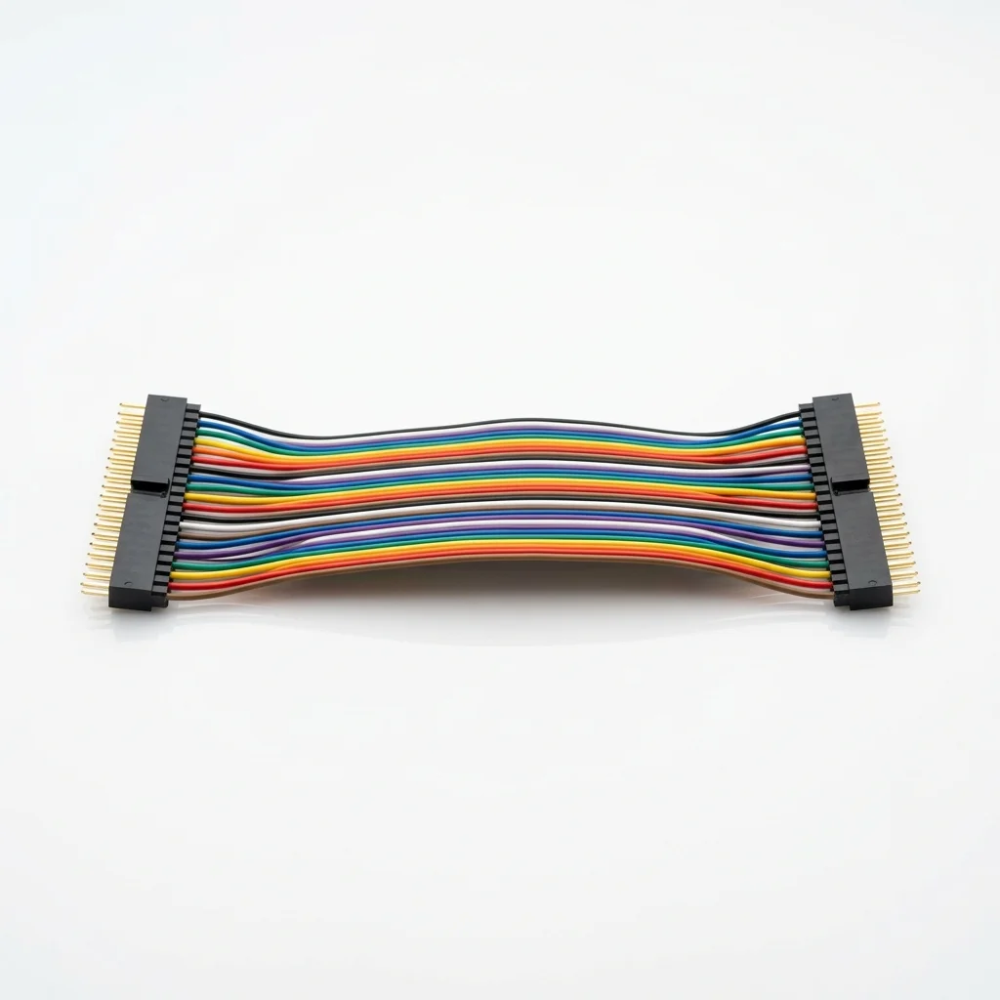

Jumper Wire — Male to Male (40 Pin, 20cm)
Color-coded DuPont ribbon cable for Arduino, ESP32 & breadboard wiring
৳85
These standard 40-pin male to male jumper wires are an absolute essential for every electronics project. The color-coded ribbon cable makes it easy to identify connections, and the flexible 20cm length is perfect for breadboard prototyping without tangled messes.
Each wire uses a 2.54mm pitch DuPont connector that grips firmly into breadboard holes, Arduino Uno header pins, and sensor module pins. Simply peel off individual wires or groups from the ribbon as needed.
Specifications:
- Quantity: 40 individual wires per ribbon cable
- Type: Male to Male DuPont connectors
- Length: 20cm (approx. 8 inches)
- Pitch: Standard 2.54mm pin spacing
- Color: Multi-color coded for easy circuit identification
- Design: Easy to strip away individually or keep as ribbon
What You Can Build:
- Connect Arduino to sensors like DHT11 and HC-SR04
- Wire up LCD displays, LEDs, and motor drivers
- Prototype circuits on breadboards before soldering
- Connect multiple modules in IoT and robotics projects